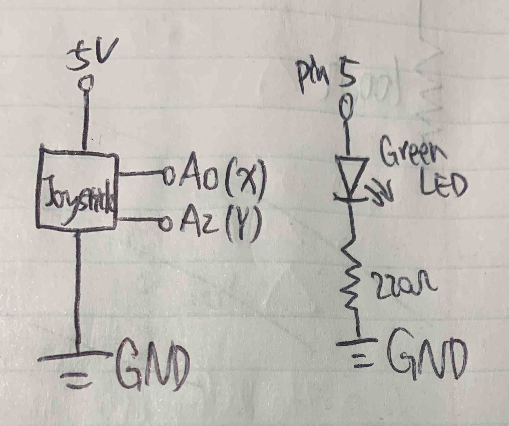
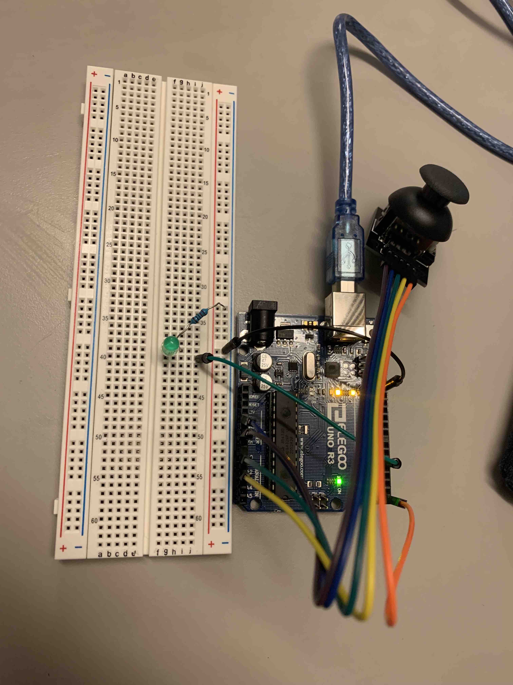

Cheng's Assignment 6 - Talking to the Web!

This is my schematic for the Talking to the Web assignment.

This is my circuit for the Talking to the Web assignment.

This is my circuit's operation for the Talking to the Web assignment.
My Firmware
// Cheng Guo
// HCDE 439 - HW 6
// initialize LED and Joystick
int xJoystick = A0; // set the x-axis input on pin A0
int yJoystick = A2; // set the y-axis input on pin A2
int greenLED = 5; // initialize the green LED on pin 5
// the setup routine runs once when you press reset:
void setup() {
// initialize serial communication at 9600 bits per second:
Serial.begin(9600);
pinMode(greenLED, OUTPUT); // initialize the green LED on pin 5
}
// the loop routine runs over and over again forever:
void loop() {
// record input from the joystick
Serial.print("["); // print a bracket to the serial monitor
Serial.print(analogRead(xJoystick)); // print the x value to the serial monitor
Serial.print(","); // print a comma to the serial monitor
Serial.print(analogRead(yJoystick)); // print the y value to the serial monitor
Serial.println("]"); // print a bracket to the serial monitor
// change the brightness of the LED based on keyboard input
if (Serial.available() > 0) { // if there's serial data
int inByte = Serial.read(); // read it
Serial.write(inByte); // send it back out as raw binary data
analogWrite(greenLED, inByte); // use it to set the green LED brightness
} else { // if there is no serial data
analogWrite(greenLED, 0); // turns off the green LED
}
}
My webpage's p5.js code
var serial; // variable to hold an instance of the serialport library
var portName = '/dev/tty.usbmodem14201'; //rename to the name of your port
var xPos = 0; // initialize a placeholder for x-position
var xInput; // initialize a placeholder for x-axis input
var yInput; // initialize a placeholder for y-axis input
function setup() {
serial = new p5.SerialPort(); // make a new instance of the serialport library
serial.on('list', printList); // set a callback function for the serialport list event
serial.on('connected', serverConnected); // callback for connecting to the server
serial.on('open', portOpen); // callback for the port opening
serial.on('data', serialEvent); // callback for when new data arrives
serial.on('error', serialError); // callback for errors
serial.on('close', portClose); // callback for the port closing
serial.list(); // list the serial ports
serial.open(portName); // open a serial port
createCanvas(600, 600); // make a 600 * 600 pixels canvas
}
// get the list of ports:
function printList(portList) {
// portList is an array of serial port names
for (var i = 0; i < portList.length; i++) {
// Display the list the console:
print(i + " " + portList[i]);
}
}
function serverConnected() {
print('connected to server.');
}
function portOpen() {
print('the serial port opened.')
}
function serialError(err) {
//print('Something went wrong with the serial port. ' + err);
print(err);
}
function portClose() {
print('The serial port closed.');
}
function serialEvent() {
if (serial.available()) {
var datastring = serial.readLine(); // read in some serial
var maybeArray; // initialize a placeholder for array input
try {
maybeArray = JSON.parse(datastring); // can we parse the serial?
xInput = maybeArray[0]; // record the x-axis input
yInput = maybeArray[1]; // record the y-axis input
console.log("got back " + xInput + " and " + yInput); // print the output to the console
} catch(err) {
// got something that's not a json
}
}
}
function keyPressed() { // function for P5 communicates to Arduino
console.log("writing key"); // check the console if a key is pressed
serial.write(key); // write the key to the Arduino
}
function graphData(newData) {
// map the range of the input to the window height:
var yPos = map(newData, 0, 255, 0, height);
// draw the line in a pretty color:
stroke(255, 0, 80);
line(xPos, height, xPos, height - yPos);
// at the edge of the screen, go back to the beginning:
if (xPos >= width) {
xPos = 0;
// clear the screen by resetting the background:
background(0x08, 0x16, 0x40);
} else {
// increment the horizontal position for the next reading:
xPos++;
}
}
function draw() { // function for Arduino communicates to P5
background(0); // initialize the background color
fill(255); // initialize the fill color
if (xInput < 200 && yInput < 200) { // if the joystick is on the top-left
text("Move up", 300,300); // write "Move up" in the middle of the screen
} else if (xInput < 200 && yInput > 823) { // if the joystick is on the bottom-left
text("Move to the left", 300,300); // write "Move to the left" in the middle of the screen
} else if (xInput > 823 && yInput < 200) { // if the joystick is on the top-right
text("Move to the right", 300,300); // write "Move to the right" in the middle of the screen
} else if (xInput > 823 && yInput > 823) { // if the joystick is on the bottom-right
text("Move down", 300,300); // write "Move down" in the middle of the screen
} else { // if the joystick remains on the original position
text("No motion", 300,300) // write "No motion" in the middle of the screen
}
}
This is my code for the Talking to the Web assignment. As the joystick move, the web displays move up, down, to the left, or to the right. When I press any key at the keyboard, the green LED will blink based on the key value.